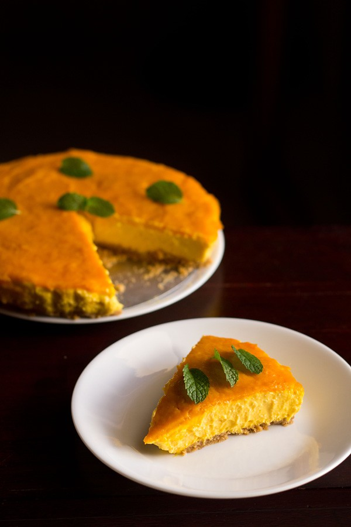

Mango Cheesecake

Description
Light, airy, and sweet Mango Cheesecake is simply a dessert delight! Classic creamy no-bake cheesecake is given a summer twist in this easy-to-make and delicious treat.
Perfect for summer baking therapy!
Ingredients
- Cream Crackers or Digestive Biscuits
- Honey or Melted Butter
- Ground Cinnamon
- Mangoes
- Cream Cheese
- Cream
- Vanilla Extract
- Sugar
- Agar Agar
- Water
Steps:
- Cut the agar agar strands with kitchen scissors to small pieces. You should get about 5 to 6 tablespoons of finely chopped agar agar strands.
- Soak the agar agar pieces in ½ cup of water for 25 to 30 mins. Read on below if using agar agar powder.
- Meanwhile, break 14 to 15 crackers or biscuits in a dry grinder, blender or food processor. Powder to a fine consistency. A slightly semi-fine consistency is also alright.
- Add ¼ teaspoon ground cinnamon and 3 tablespoons honey or 3 tablespoons melted butter.
- Process till the honey or butter mixes well. Scrape with a spoon or spatula if required.
- Grease the base of a 8 inch detachable pie pan with softened butter. This is a tart pan with a detachable base, but a springform pan will also work. Skip this step if you are using individual bowls or glasses.
- Place the powdered cracker or biscuits on the greased pan base. Spread the layer evenly with a spoon or spatula and press in the crust with your fingertips. Place the crust in the fridge for about 15 minutes to set.
- Peel and chop 3 medium-sized mangoes. Prepare the mango purée in a blender. Divide the mango puree into two roughly equal portions in separate bowls and keep aside.
- Beat or whip 200 to 225 cream cheese, 200 ml light cream or whipping cream, ½ cup sugar and vanilla extract to a smooth even mixture.
- Add half of the mango puree to the whipped cream cheese mixture. Mix very well.
- Now heat the pan containing the agar agar and water to a simmer over a low heat. Keep on stirring and cook this mixture till the agar agar dissolves in the water and you see a smooth gelatinous liquid.
- Allow the agar agar solution to cool for about 2 minutes, then add half of it to the mango cream cheese mixture and stir quickly and vigorously.
- Add another half of the agar agar solution to the remaining half of the mango puree and stir quickly to make an even mixture. Keep aside.
- Pour the mango cream cheese mixture on the base cracker layer. Shake the pan gently to spread the cream cheese. Use a spatula or the back of a spoon to even out the mango cream cheese layer.
- Place the pan in the fridge for about 20 to 25 minutes for the second layer to set a bit. Then, spread the remaining mango+agar agar mixture very gently on the cream cheese layer without disturbing it.
- Refrigerate for 5 to 6 hours or overnight till the cheesecake is set.
- This is mango cheesecake set and done, the next day. Gently remove the base on a cake stand or on a serving plate. This one is just topped with some mint leaves for garnish.
- You can decorate the cheesecake with chopped mangoes, chocolate shavings, whipped cream, or anything that you and your family prefers.
- Slice the mango cheese cake and serve immediately. Enjoy!
Return to Main Page